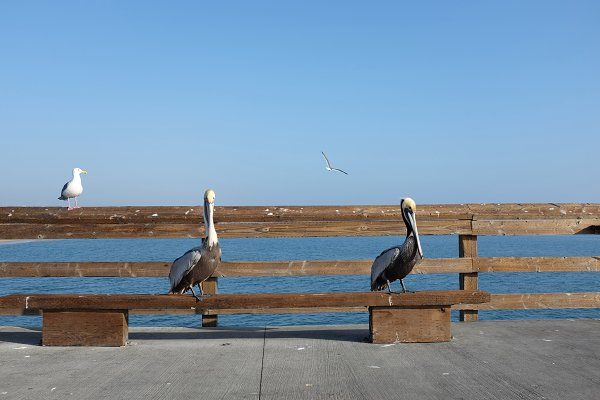

 People don't think of birds as being part of marine life, but there are about 300 different types of species that hang around the ocean. They include penguins, skuas, gulls, guillemots, terns, puffins, auks, skimmers, albatrosses, petrels, shearwaters, fulmars, frigatebirds, gannets, boobies, cormorants, shags, tropicbirds and pelicans. Most birds feed on fish, and krill.
A seabird can be defined as a bird that makes its living primarily from the ocean, beyond the intertidal or surf zone. Seabirds are beautifully adapted for life in the ocean. Generally, they have dense, waterproof feathers; layers of fat; and a desalinization system to remove excess salt.
My favorite is the penguin. I like the black and white coloring. It looks like they are wearing a tuxedo.